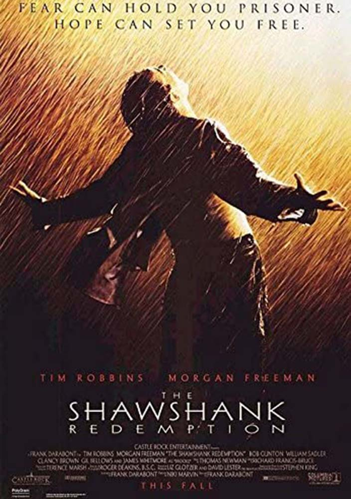

-

The Shawshank Redemption
Director: Frank Darabont
Writers: Stephen King and Frank DarabontRelease Date: October 14, 1994
Running Time: 2 hours, 22 minutes)
Chronicles the experiences of a formerly successful banker as a prisoner in the gloomy jailhouse of Shawshank after being found guilty of a crime he did not commit. The film portrays the man's unique way of dealing with his new, torturous life; along the way he befriends a number of fellow prisoners, most notably a wise long-term inmate named Red.
-

The Godfather
Director: Francis Ford Coppola
Writers: Mario Puzo and Francis Ford CoppolaRelease Date: March 24, 1972
Running Time: 2 hours, 55 minutes)
The Godfather "Don" Vito Corleone is the head of the Corleone mafia family in New York. He is at the event of his daughter's wedding. Michael, Vito's youngest son and a decorated WW II Marine is also present at the wedding. Michael seems to be uninterested in being a part of the family business. Vito is a powerful man, and is kind to all those who give him respect but is ruthless against those who do not. But when a powerful and treacherous rival wants to sell drugs and needs the Don's influence for the same, Vito refuses to do it. What follows is a clash between Vito's fading old values and the new ways which may cause Michael to do the thing he was most reluctant in doing and wage a mob war against all the other mafia families which could tear the Corleone family apart.
-
The Dark Knight
Director: Christopher Nolan
Writers: Christopher Nolan, Jonathan NolanRelease Date: July 18, 2008
Running Time: 2 hours, 32 minutes)
Set within a year after the events of Batman Begins (2005), Batman, Lieutenant James Gordon, and new District Attorney Harvey Dent successfully begin to round up the criminals that plague Gotham City, until a mysterious and sadistic criminal mastermind known only as "The Joker" appears in Gotham, creating a new wave of chaos. Batman's struggle against The Joker becomes deeply personal, forcing him to "confront everything he believes" and improve his technology to stop him. A love triangle develops between Bruce Wayne, Dent, and Rachel Dawes.
-

12 Angry Men
Director: Sidney Lumet
Writers: Reginald RoseRelease Date: April 10, 1957
Running Time: 1 hours, 36 minutes)
The defense and the prosecution have rested and the jury is filing into the jury room to decide if a young man is guilty or innocent of murdering his father. What begins as an open-and-shut case of murder soon becomes a detective story that presents a succession of clues creating doubt, and a mini-drama of each of the jurors' prejudices and preconceptions about the trial, the accused, and each other. Based on the play, all of the action takes place on the stage of the jury room.
-
Schindler's List
Director: Stephen Speilberg
Writers: Thomas Kaneally, Steven ZaillianRelease Date: February 4, 1994
Running Time: 3 hours, 15 minutes)
Oskar Schindler is a vain and greedy German businessman who becomes an unlikely humanitarian amid the barbaric German Nazi reign when he feels compelled to turn his factory into a refuge for Jews. Based on the true story of Oskar Schindler who managed to save about 1100 Jews from being gassed at the Auschwitz concentration camp, it is a testament to the good in all of us.
-
The Lord of the Rings: The Return of the King
Director: Peter Jackson
Writers: J.R.R. Tolkien, Fran WalshRelease Date: December 17, 2003
Running Time: 3 hours, 21 minutes)
The final confrontation between the forces of good and evil fighting for control of the future of Middle-earth. Frodo and Sam reach Mordor in their quest to destroy the One Ring, while Aragorn leads the forces of good against Sauron's evil army at the stone city of Minas Tirith.